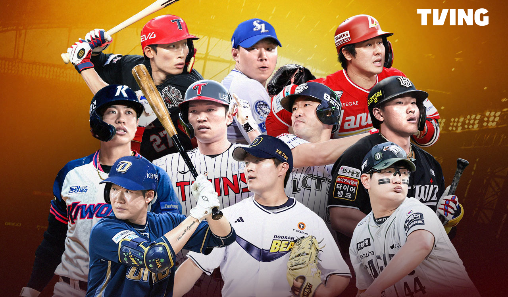

for international baseball fans
KBO Fans Worldwide
A simple guide for fans who want to follow KBO from outside Korea. Find team information, watching options, and beginner-friendly resources.
About
Learn more about this project and its purpose for KBO fans worldwide.

How to Watch
Learn where and how to watch KBO games from the U.S.

Beginner Guide
A simple starting guide for new fans of Korean baseball.

Teams
Explore KBO teams and get familiar with each club.
FAQ
Quick answers to common questions about KBO and how to follow it.
Contact
Share questions, feedback, or suggestions for this KBO resource site.